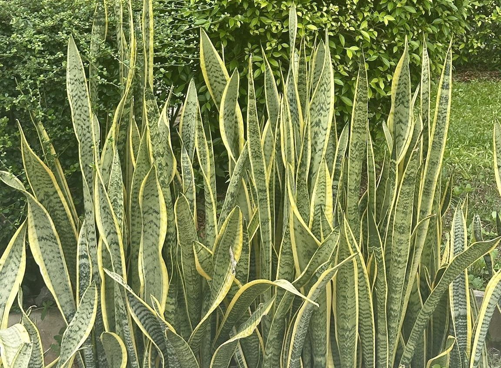
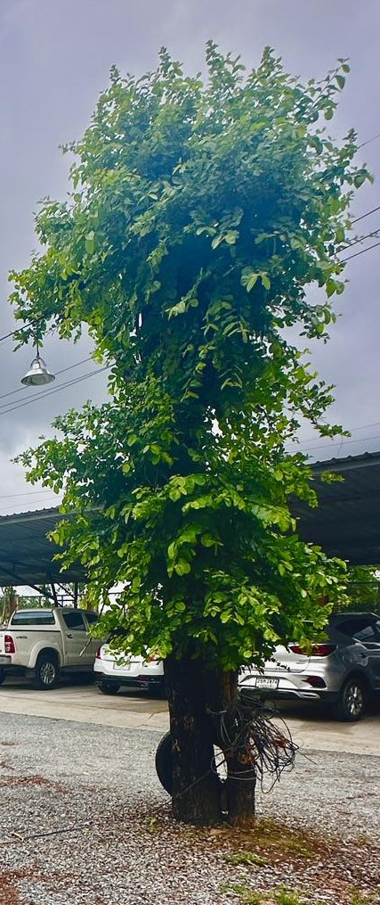
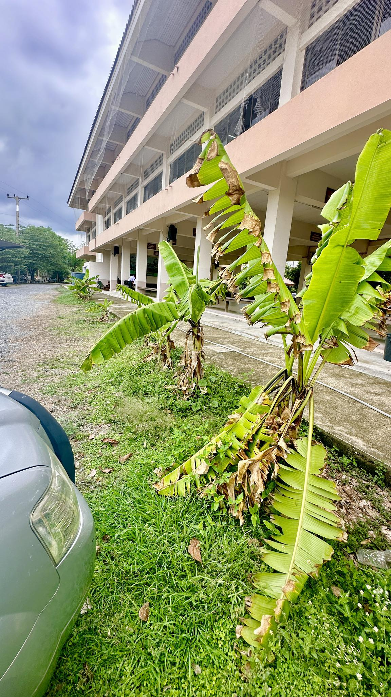
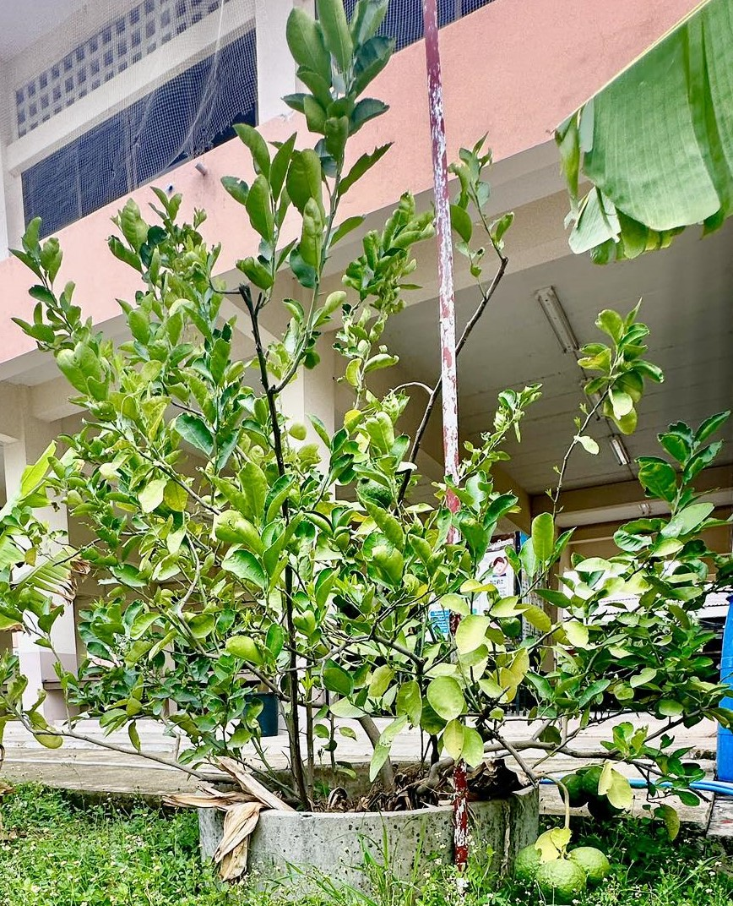
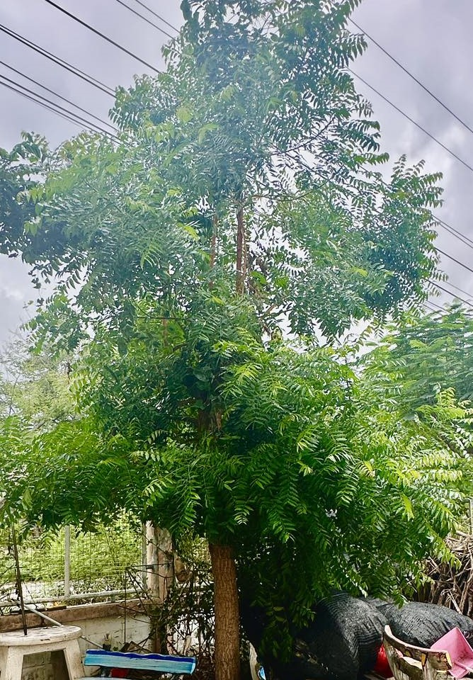
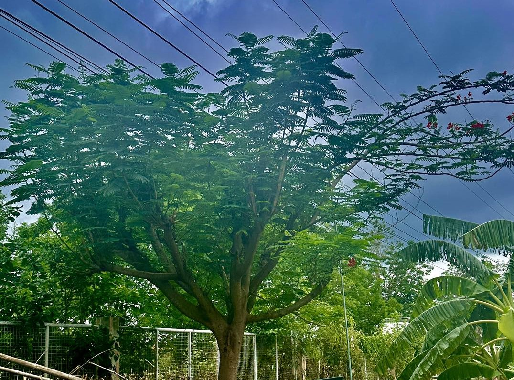
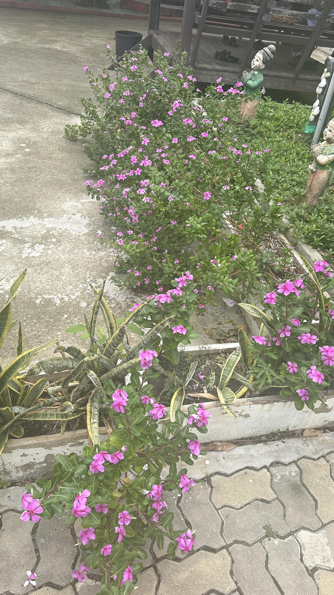
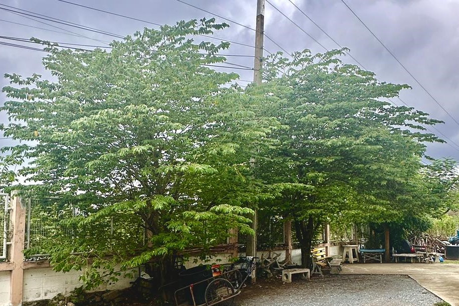
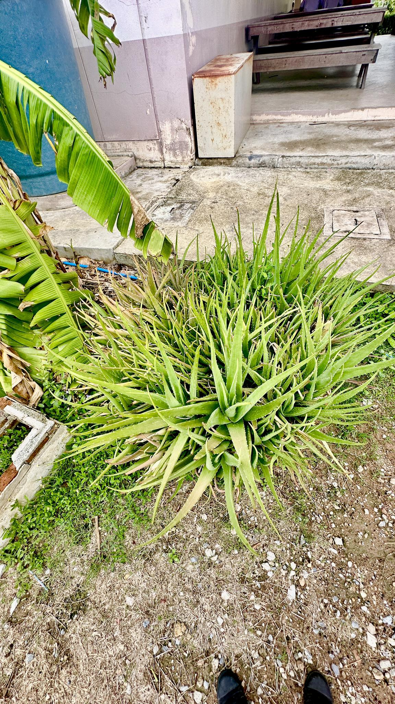
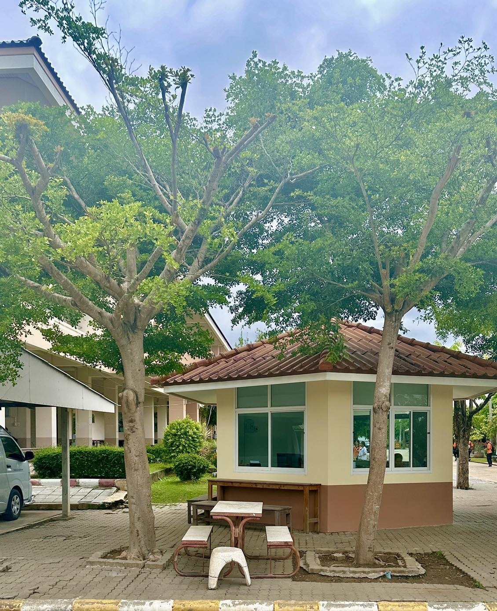

เทียนทอง
ต้นเทียนทอง นอกจากจะมีดอกสีเหลืองอร่ามสวยงามแล้ว ยังมีประโยชน์อีกมากมาย ดังนี้
ประโยชน์ของต้นเทียนทอง
ไม้ประดับ: เป็นที่นิยมปลูกเป็นไม้ประดับ เนื่องจากดอกสวยงาม ใบเขียวชอุ่ม และดูแลรักษาง่าย
ไม้มงคล: เชื่อกันว่าช่วยเรียกทรัพย์ เรียกโชคลาภ ทำให้การค้าขายร่ำรวย และครอบครัวอยู่เย็นเป็นสุข
สมุนไพร: ผลสุกของต้นเทียนทองสามารถนำมาต้มเป็นยาแก้ท้องเสีย
พืชอาหาร: ผลสุกของต้นเทียนทองสามารถรับประทานได้ มีรสชาติหวานอมเปรี้ยว
พืชป้องกันดิน: ช่วยป้องกันการชะล้างพังทลายของดิน
ชาดัด หรือ ชาฮกเกี้ยน
ชาดัด หรือ ชาฮกเกี้ยน เป็นไม้พุ่มขนาดเล็กที่มีประโยชน์หลากหลาย นอกจากจะใช้เป็นไม้ประดับตกแต่งสวนแล้ว ยังมีสรรพคุณทางยาและประโยชน์อื่นๆ อีกมากมาย
สรรพคุณทางยา
แก้ไข้: ชาที่สกัดจากใบชาดัดมีสรรพคุณในการลดไข้
บรรเทาอาการเจ็บคอ: ช่วยลดอาการระคายเคืองและบรรเทาอาการเจ็บคอ
ช่วยย่อยอาหาร: ช่วยกระตุ้นการทำงานของระบบย่อยอาหาร ทำให้รู้สึกสบายท้อง
ลดอาการอักเสบ: ช่วยลดอาการอักเสบต่างๆ ในร่างกาย

ลิ้นมังกรเขียว
ต้นลิ้นมังกรเขียว นอกจากจะมีรูปลักษณ์ที่สวยงามและดูแลง่ายแล้ว ยังมีประโยชน์อีกมากมายเลยค่ะ โดยเฉพาะอย่างยิ่งในด้านการฟอกอากาศและความเป็นมงคล
ประโยชน์ของต้นลิ้นมังกรเขียว:
ฟอกอากาศ: ต้นลิ้นมังกรเขียวเป็นที่รู้จักกันดีในเรื่องความสามารถในการดูดซับสารพิษในอากาศ เช่น เบนซีน ฟอร์มาลดีไฮด์ ไตรคลอโรเอทิลีน และคาร์บอนมอนอกไซด์ ทำให้อากาศในบ้านบริสุทธิ์ขึ้น
ปล่อยออกซิเจน: ในขณะเดียวกัน ต้นลิ้นมังกรเขียวก็ยังปล่อยออกซิเจนออกมาในเวลากลางคืน ทำให้ห้องนอนมีอากาศบริสุทธิ์เหมาะสำหรับการพักผ่อน
ลดความเครียด: การมีต้นไม้ในบ้านช่วยลดความเครียดและเพิ่มความผ่อนคลายได้
ดูแลง่าย: ต้นลิ้นมังกรเขียวเป็นพืชที่ทนทานต่อสภาพแวดล้อม สามารถเจริญเติบโตได้ดีในที่ที่มีแสงน้อยและรดน้ำไม่บ่อย
ความเป็นมงคล: ในหลายวัฒนธรรมเชื่อว่าต้นลิ้นมังกรเขียวเป็นต้นไม้มงคล ช่วยเสริมสิริมงคลให้กับบ้านและผู้ที่อาศัยอยู่

ตะโก
ต้นตะโก เป็นไม้ยืนต้นที่มีประโยชน์หลากหลาย ทั้งในด้านสมุนไพร การใช้ประโยชน์จากเนื้อไม้ และการนำไปใช้ประโยชน์อื่นๆ อีกมากมาย
สรรพคุณทางยา
เปลือกและแก่น: ใช้รักษาโรคเกี่ยวกับทางเดินอาหาร เช่น ท้องเสีย ท้องอืด บิด แก้ไข้ แก้ปวดเมื่อย
ใบ: ใช้รักษาแผลสด แผลไฟไหม้ และลดอาการอักเสบ
ผลสุก: ช่วยบำรุงกำลัง แก้กระหายน้ำ และมีฤทธิ์เป็นยาถ่าย
การใช้ประโยชน์อื่นๆ:
เนื้อไม้: เนื้อไม้ของต้นตะโกมีความแข็งแรงทนทาน มีสีดำหรือน้ำตาลเข้ม นิยมนำไปใช้ทำเฟอร์นิเจอร์ เครื่องมือทางการเกษตร และงานแกะสลัก

กล้วย
ต้นกล้วยนั้นมีประโยชน์มากมายเลยค่ะ ตั้งแต่รากจนถึงใบ ล้วนสามารถนำมาใช้ประโยชน์ได้หลากหลาย
ประโยชน์ของต้นกล้วย
ผลกล้วย: เป็นผลไม้ที่ให้พลังงานสูง มีวิตามินและแร่ธาตุต่างๆ มากมาย เช่น โพแทสเซียม แมกนีเซียม และวิตามินบี 6 ซึ่งดีต่อสุขภาพหัวใจ ระบบประสาท และช่วยในการย่อยอาหาร นอกจากนี้ยังสามารถนำไปแปรรูปเป็นผลิตภัณฑ์ต่างๆ ได้อีกมากมาย เช่น กล้วยตาก กล้วยเชื่อม กล้วยฉาบ เป็นต้น
ลำต้น:
หัวปลี: สามารถนำมาประกอบอาหารได้หลากหลาย เช่น แกงส้ม แกงหน่อไม้
กาบกล้วย: สามารถนำมาใช้ห่ออาหาร ทำเชือก หรือทำปุ๋ยหมักได้
ใบกล้วย: สามารถนำมาห่ออาหาร ทำจานใบ ทำหลังคา หรือใช้ปูพื้นได้

มะนาว
ต้นมะนาวเป็นพืชที่มีประโยชน์หลากหลาย ทั้งในด้านการบริโภคและการใช้ประโยชน์อื่นๆ มาดูกันว่าต้นมะนาวมีประโยชน์อะไรบ้าง
ประโยชน์ทางด้านอาหาร
ผล: ผลมะนาวให้รสเปรี้ยว ใช้ปรุงรสอาหารต่างๆ เช่น ส้มตำ ยำ น้ำพริก ทำให้รสชาติอาหารอร่อยกลมกล่อมขึ้น
น้ำมะนาว: น้ำมะนาวอุดมไปด้วยวิตามินซี ช่วยเสริมสร้างภูมิคุ้มกัน ป้องกันหวัด และมีส่วนช่วยในการดูแลผิวพรรณให้สดใส
เปลือกมะนาว: เปลือกมะนาวมีน้ำมันหอมระเหย สามารถนำมาใช้ปรุงรสอาหาร ทำให้มีกลิ่นหอมชื่นใจ และยังใช้ในการทำความสะอาดได้อีกด้วย
ประโยชน์ทางยา
แก้ไอ: น้ำมะนาวผสมกับน้ำอุ่น ช่วยบรรเทาอาการไอและเจ็บคอ
ช่วยย่อยอาหาร: น้ำมะนาวช่วยกระตุ้นการทำงานของเอนไซม์ในกระเพาะอาหาร ช่วยให้ย่อยอาหารได้ดีขึ้น
ดูแลผิวพรรณ: น้ำมะนาวช่วยลดสิว ฝ้า กระ และทำให้ผิวพรรณสดใส

สะเดา
ต้นสะเดาเป็นพืชที่มีประโยชน์หลากหลาย ทั้งในด้านสมุนไพรและการใช้ประโยชน์อื่นๆ มาดูกันว่าต้นสะเดามีอะไรดีบ้าง
สรรพคุณทางยา
แก้ไข้: ช่วยลดไข้ แก้ไข้หวัด
แก้ท้องเสีย: ช่วยบรรเทาอาการท้องเสีย ท้องร่วง
แก้บิด: ช่วยรักษาอาการบิด
ขับพยาธิ: ช่วยกำจัดพยาธิในลำไส้
ลดความดันโลหิต: ช่วยควบคุมระดับความดันโลหิต
บำรุงผิวพรรณ: ช่วยรักษาสิว ฝ้า กระ และโรคผิวหนังบางชนิด
ฆ่าเชื้อ: ช่วยฆ่าเชื้อแบคทีเรียและเชื้อรา
การใช้ประโยชน์อื่นๆ
หมากเหลือง
ต้นหมากเหลือง นอกจากจะเป็นไม้ประดับที่มีใบสีเหลืองทองอร่ามสวยงามแล้ว ยังมีประโยชน์อื่นๆ อีกมากมาย
ประโยชน์ของต้นหมากเหลือง
ไม้มงคล: เชื่อกันว่าเป็นไม้มงคลที่นำความเจริญรุ่งเรืองมาสู่บ้านเรือน
ไม้ประดับ: ใช้ตกแต่งสวน หรือปลูกในกระถางเพื่อประดับภายในบ้าน
ฟอกอากาศ: ช่วยดูดซับสารพิษในอากาศ ทำให้อากาศบริสุทธิ์
บังแดด: ให้ร่มเงาและความร่มรื่น
ลดมลภาวะทางเสียง: ช่วยลดเสียงรบกวนจากภายนอก

หางนกยูง
ต้นหางนกยูงนั้นมีประโยชน์หลากหลายเลยค่ะ ทั้งในด้านการประดับและสรรพคุณทางยา โดยทั่วไปแล้วต้นหางนกยูงแบ่งออกเป็น 2 ชนิดหลักๆ คือ
หางนกยูงไทย: มีดอกสีเหลืองสดใส
หางนกยูงฝรั่ง: มีดอกสีแดงหรือสีชมพู
สรรพคุณทางยา:
ราก:
ช่วยขับประจำเดือน
แก้บวม
แก้ไข้
บำรุงโลหิต
ดอก:
ช่วยลดไข้
บรรเทาอาการปวดฟัน (โดยการนำดอกไปต้มและอม)

แพงพวยฝรั่ง
ต้นแพงพวยฝรั่ง นอกจากจะเป็นไม้ดอกที่สวยงามแล้ว ยังมีสรรพคุณทางยาที่น่าสนใจอีกด้วย โดยส่วนต่างๆ ของต้นแพงพวยฝรั่ง สามารถนำมาใช้ประโยชน์ได้ดังนี้
สรรพคุณทางยา
แก้เบาหวาน: ทั้งต้นแห้งสามารถนำมาต้มดื่มเพื่อช่วยควบคุมระดับน้ำตาลในเลือด
ลดความดันโลหิต: ช่วยลดความดันโลหิตสูง
ขับปัสสาวะ: ช่วยขับปัสสาวะ แก้บวม
แก้ไอ: ช่วยบรรเทาอาการไอแห้งๆ
แก้พิษ: ช่วยแก้พิษจากการดื่มสุรา
แก้โรคผิวหนัง: ช่วยรักษาโรคผิวหนัง เช่น ผื่นคัน แผลอักเสบ
จามจุรี
ต้นจามจุรี นอกจากจะเป็นต้นไม้ใหญ่ให้ร่มเงาแล้ว ยังมีประโยชน์อีกมากมายเลยค่ะ ทั้งในด้านสมุนไพร การใช้ประโยชน์จากส่วนต่างๆ ของต้น และประโยชน์ทางนิเวศวิทยา
ใบ: ใช้ดับพิษ แก้ปวดแสบปวดร้อน
เมล็ด: แก้โรคผิวหนัง กลากเกลื้อน แก้เยื่อตาอักเสบ
เปลือกต้น: สมานแผลในปากคอ แก้โรคเหงือกบวม แก้ปวดฟัน แก้ริดสีดวงทวารหนัก แก้โลหิตตกใน
ประโยชน์ทางนิเวศวิทยา:
ดูดซับก๊าซคาร์บอนไดออกไซด์: ช่วยลดภาวะโลกร้อน
ผลิตออกซิเจน: ช่วยเพิ่มปริมาณออกซิเจนในอากาศ
เป็นแหล่งที่อยู่อาศัยของสัตว์: เช่น นก แมลง
การใช้ประโยชน์จากส่วนต่างๆ:
เนื้อไม้: ใช้ทำเฟอร์นิเจอร์ เครื่องมือทางการเกษตร
ใบ: ใช้เป็นปุ๋ยหมัก ปรับปรุงดิน
ดอก: เป็นอาหารของแมลง
ร่มเงา: ให้ร่มเงาในบริเวณกว้าง
บังลม: ช่วยลดความแรงของลม

ตะขบ
ต้นตะขบ นอกจากจะเป็นผลไม้ที่มีรสชาติหวานอมเปรี้ยว ชื่นใจแล้ว ยังมีสรรพคุณทางยาที่น่าสนใจอีกมากมาย โดยส่วนต่างๆ ของต้นตะขบ ตั้งแต่ราก ใบ ดอก และผล ล้วนมีประโยชน์ต่อสุขภาพทั้งสิ้น
สรรพคุณของตะขบ
ผลตะขบ:
บำรุงกำลัง
ชุ่มชื่นหัวใจ
มีเส้นใยอาหารสูง ช่วยในการขับถ่าย
อุดมไปด้วยวิตามินและแร่ธาตุ
ช่วยลดระดับคอเลสเตอรอล
ลดความเสี่ยงของโรคมะเร็งลำไส้
ป้องกันโรคเส้นเลือดในสมองแตก

จรเข้
ว่านหางจรเข้ เป็นพืชสมุนไพรที่มีสรรพคุณมากมาย ถูกนำมาใช้ประโยชน์ทั้งทางด้านความงามและสุขภาพมานานหลายศตวรรษ ด้วยคุณสมบัติที่โดดเด่นหลายประการ ทำให้ว่านหางจรเข้เป็นส่วนผสมหลักในผลิตภัณฑ์บำรุงผิวและผลิตภัณฑ์ดูแลสุขภาพมากมาย
สรรพคุณเด่นของว่านหางจรเข้:
บำรุงผิว: ช่วยให้ผิวชุ่มชื้น ลดการอักเสบ ลดรอยแดง ลดรอยแผลเป็น เหมาะสำหรับผิวแห้ง ผิวแพ้ง่าย และผิวที่ถูกแสงแดดเผา
สมานแผล: ช่วยเร่งการสมานแผล ลดการติดเชื้อ เหมาะสำหรับแผลเล็กๆ น้อยๆ แผลไฟไหม้ แผลน้ำร้อนลวก
ลดอาการอักเสบ: ช่วยลดอาการอักเสบของผิวหนัง บรรเทาอาการคัน
ต่อต้านอนุมูลอิสระ: ช่วยชะลอความเสื่อมของเซลล์ ช่วยให้ผิวดูอ่อนเยาว์
